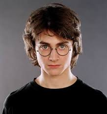

Note-worthy Hogwarts Alumni
Hogwarts served as a home to many successful and talented wizards and witches. Below are two legendary alumni you MUST know about:
Harry Potter

Harry Potter is The Boy Who Lived, singled out by Lord Voldermort at birth to be his greatest rival, and our hero! He fought Voldermort and was able to defeat HeWhoMustNotBeNamed on May 2nd, 1998…A day no one will ever forget.
Hermione Granger
 Don’t worry if you are a muggle! Hermione, the daughter of two muggle parents, studied at Hogwarts and is now working on board with the British Ministry of Magic. She went from a bookish Muggle-born to be one of Gryffindor’s bravest.
Don’t worry if you are a muggle! Hermione, the daughter of two muggle parents, studied at Hogwarts and is now working on board with the British Ministry of Magic. She went from a bookish Muggle-born to be one of Gryffindor’s bravest.